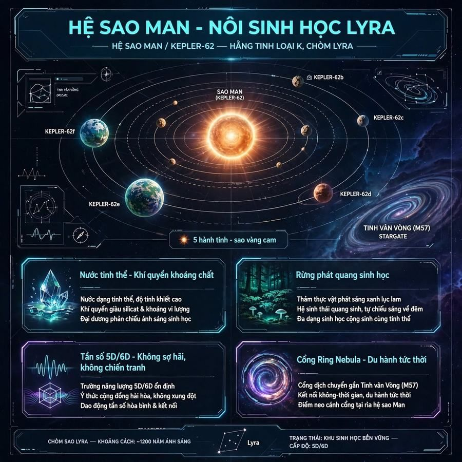
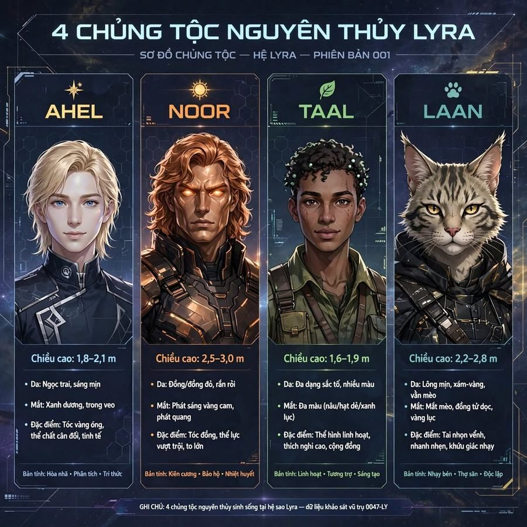
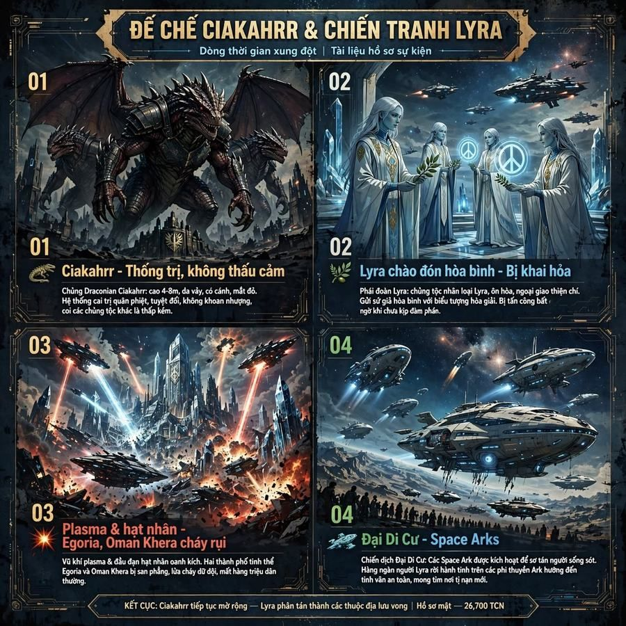
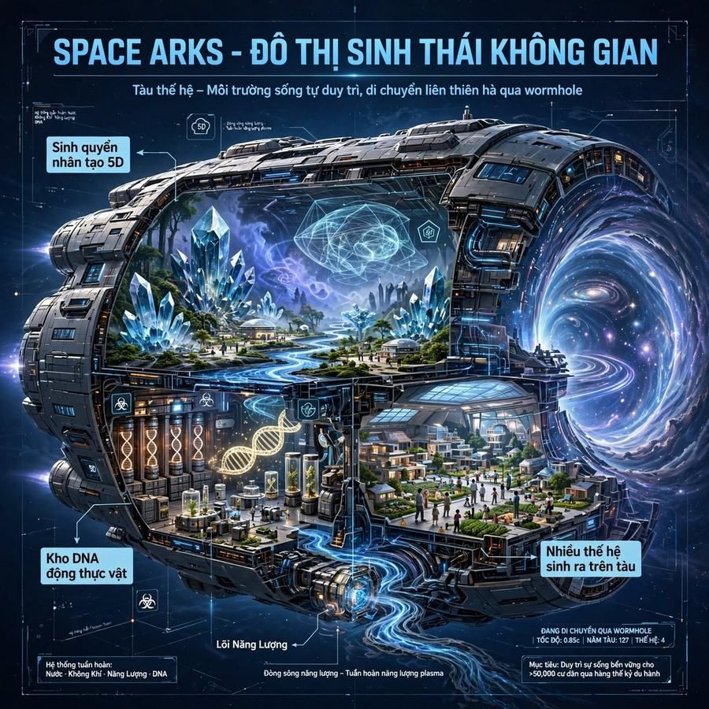

Trang chủ / Chuyên đề 2: Hành Trình Thiên Hà / Kỳ 11
Chuyên đề 2 · Kỳ 11 / 90
NÔI SINH HỌC LYRA & BIẾN CỐ XÂM LƯỢC CỦA ĐẾ CHẾ BÒ SÁT CIAKAHRR

Có bao giờ bạn đứng dưới bầu trời đêm ngập tràn ánh sao, ngước nhìn về phía chòm sao Lyra (Thiên Thần) và cảm nhận được một niềm thôi thúc mơ hồ, một nỗi nhớ nhà diệu kỳ rần rật chảy qua từng tế bào?
Đó không phải là sự tưởng tượng ngẫu nhiên. Trong ký ức di truyền tập thể của loài người, sâu thẳm bên trong mã gen của chúng ta vẫn còn lưu giữ hình ảnh của một thiên đường đã mất hàng triệu năm về trước — Hệ sao Man thuộc chòm sao Lyra, nôi sinh học khởi thủy của toàn bộ các chủng tộc dạng người (Humanoid) trong dải Ngân Hà!
Hãy cùng mở ra cuốn sử thi thiên hà cổ đại để khám phá nguồn gốc đích thực của nhân loại, sự rực rỡ của nền văn minh Lyra nguyên thủy và biến cố chiến tranh bi hùng đã thay đổi vĩnh viễn bộ mặt của vũ trụ!
✦ ✦ ✦1. HỆ SAO MAN (KEPLER-62) — NÔI SINH HỌC KHỞI THỦY CỦA VŨ TRỤ
Để tìm lại gốc rễ của loài người, chúng ta phải ngược dòng thời gian về hàng chục triệu năm trước. Thời điểm đó, tại một khu vực thanh bình thuộc chòm sao Lyra (cách Trái Đất ngày nay khoảng 1.200 năm ánh sáng, được thiên văn học hiện đại gọi là hệ sao Kepler-62 hay hệ sao Man), một dự án kiến tạo sự sống vĩ đại đã được bắt đầu.
A. Vị trí chiến lược và Môi trường sinh thái lý tưởng
Hệ sao Man sở hữu 5 hành tinh xoay quanh một ngôi sao mẹ tỏa ánh sáng vàng cam dịu mát. Sinh quyển trên các hành tinh như Egoria hay Oman Khera thời bấy giờ rực rỡ và tươi đẹp đến mức khó có từ ngữ nào của ngôn ngữ 3D hiện đại có thể mô tả trọn vẹn:
- Nguồn nước tinh thể & Khí quyển dồi dào: Nguồn nước trên các hành tinh Lyra mang dải tần số cấu trúc tinh thể tự nhiên, giàu năng lượng Etheric. Bầu khí quyển đậm đặc khoáng chất quang phổ giúp thảm thực vật phát triển khổng lồ, tỏa ra ánh sáng sinh học (Bioluminescence) lung linh khi đêm xuống.
- Tần số rung động 5D/6D: Toàn bộ hệ sao Man vận hành ở dải mật độ nhận thức rất cao. Nơi đây không có sự sợ hãi, không có sự khan hiếm tài nguyên và tuyệt nhiên chưa từng tồn tại khái niệm chiến tranh hay xung đột bạo lực.

2. CHÂN DUNG 4 CHỦNG TỘC NGƯỜI NGUYÊN THỦY TẠI LYRA
Tại hệ thống hành tinh tuyệt vời này, 4 dòng di truyền người nguyên thủy đầu tiên đã được nuôi dưỡng và phát triển thành những nền văn hóa vô cùng độc đáo:
A. Chủng tộc Ahel (Tổ tiên của dòng Pleiades Errahel)
- Ngoại hình: Chiều cao trung bình từ 1,8m đến 2,1m, làn da trắng ngọc trai, mái tóc màu vàng kim hoặc bạch kim, cùng đôi mắt màu xanh lam hoặc xanh lục sâu thẳm.
- Đặc tính tâm thức: Người Ahel sống hòa hợp tuyệt đối với tự nhiên. Họ là những bậc thầy về việc sử dụng tần số âm thanh và năng lượng tinh thể để giao tiếp với thực vật và muông thú. Dòng gen Ahel chính là tổ tiên trực tiếp của người Pleiades (nhánh Taygeta / Erra) sau này.
B. Chủng tộc Noor (Dòng sinh mệnh Ánh sáng & Chiều cao vượt trội)
- Ngoại hình: Thân hình cao lớn sừng sững (từ 2,5m đến hơn 3m), làn da vô cùng nhạy cảm và mịn màng, mái tóc màu đỏ đồng hoặc vàng óng, cùng đôi mắt phát ra ánh hào quang nhẹ.
- Đặc tính tâm thức: Người Noor sở hữu trực giác và thị giác đa chiều cực kỳ phát triển. Họ đóng vai trò như những nhà tiên tri, những người giữ cổng năng lượng và chuyên nghiên cứu về các quy luật chuyển động của dải tần số vũ trụ.
C. Chủng tộc Taal (Nguồn gốc sự đa dạng di truyền Trái Đất)
- Ngoại hình: Mang sự đa dạng phong phú nhất về màu da (trắng, nâu, vàng, sẫm), màu mắt và màu tóc. Chiều cao tương đồng với con người Trái Đất hiện đại (từ 1,6m đến 1,9m).
- Đặc tính tâm thức: Người Taal là những kiến trúc sư, nhà khoa học, nhà quản lý xã hội và nghệ sĩ tài ba. Họ có tư duy sáng tạo mạnh mẽ, khả năng xây dựng các hệ thống xã hội phức tạp và tinh thần cộng đồng rất cao. Dòng gen Taal đóng góp phần lớn vào sự đa dạng sắc tộc của con người Trái Đất ngày nay.
D. Chủng tộc Laan (Feline Humanoids — Sinh mệnh dạng Người mang nét Mèo)
- Ngoại hình: Cơ thể dạng người cao lớn (từ 2,2m đến 2,8m) nhưng mang các đường nét quý phái và uyển chuyển của loài mèo (mắt có đồng tử đứng, đôi tai nhọn tinh tế, làn da phủ một lớp lông tơ mịn như nhung màu vàng kim hoặc xanh xám).
- Đặc tính tâm thức: Người Laan là chủng tộc cổ xưa nhất tại hệ Lyra, mang trí tuệ tâm linh sâu sắc và vai trò bảo hộ tri thức. Họ sở hữu khả năng đi xuyên các dải thực tại giả lập và là những người hướng dẫn tâm thức cho 3 chủng tộc còn lại.

3. NỀN VĂN MINH HÒA BÌNH NGUYÊN THỦY & NGHỆ THUẬT SỐNG HÒA HỢP
Nền văn minh Lyra nguyên thủy phát triển đạt đến đỉnh cao của cả khoa học lẫn tâm linh, nhưng sự phát triển của họ hoàn toàn khác biệt so với xã hội loài người hiện đại.
- Kiến trúc Tinh thể Ánh sáng (Crystalline Architecture): Người Lyran không xây dựng các tòa nhà bằng bê tông hay gạch đá thô cứng. Họ sử dụng công nghệ định hình sóng âm để "nuôi trồng" các công trúc sống từ tinh thể thạch anh và thực vật. Các ngôi nhà của họ có khả năng tự điều chỉnh nhiệt độ, tự làm sạch và tự điều biến tần số năng lượng theo tâm trạng của chủ nhân.
- Giao tiếp bằng Thần giao cách cảm: Ngôn ngữ nói chỉ được sử dụng cho mục đích âm nhạc và thơ ca nghệ thuật. Trong đời sống hằng ngày, người Lyran giao tiếp hoàn toàn qua sóng tư tưởng, hình ảnh và cảm xúc trực tiếp từ Luân xa Tim. Do đó, dối trá hay thao túng là điều hoàn toàn không thể tồn tại trong xã hội của họ.
- Nền Kinh tế Năng lượng Miễn phí: Mọi nguồn năng lượng dùng cho sinh hoạt và du hành đều được trích xuất trực tiếp từ trường Etheric (Zero-Point Energy). Không ai sở hữu tư liệu sản xuất, không có tiền tệ và không có sự phân cấp giàu nghèo. Mọi cư dân đều cống hiến tài năng vì niềm vui sáng tạo và sự phát triển chung của cộng đồng.
- Cổng xoáy Ring Nebula (Tinh vân Nhẫn): Nằm ngay bên cạnh hệ sao Man là Tinh vân Ring — một cổng xoáy không-thời gian siêu chiều tự nhiên cực kỳ chiến lược. Cổng sao này cho phép di chuyển tức thời sang các thiên hà lân cận và các dải mật độ khác.
Tuy nhiên, chính sự thuần khiết, hòa bình và vị trí chiến lược vô giá của Cổng sao Ring Nebula đã đưa nền văn minh Lyra vào tầm ngắm của một thế lực tối tăm và hung hãn nhất vũ trụ!
✦ ✦ ✦
4. BỐI CẢNH ĐẾ CHẾ BÒ SÁT CIAKAHRR (ALPHA DRACONIAN EMPIRE)
Trong khi cư dân Lyra tận hưởng thiên đường hòa bình, tại chòm sao Alpha Draconis, một nền văn minh với triết lý sống hoàn toàn trái ngược đã phát triển đến đỉnh cao quân sự: Đế chế Bò sát Ciakahrr (Alpha Draconians).
A. Bản chất sinh học và Tâm thức Chinh phục
- Ngoại hình: Sinh mệnh Bò sát khổng lồ (cao từ 4m đến 8m), có vảy sừng cứng như thép, đôi mắt đỏ rực với đồng tử xẻ dọc, nhiều cá thể hoàng gia sở hữu đôi cánh lớn sau lưng.
- Tư tưởng Độc tài & Thống trị: Người Ciakahrr tin rằng họ là chủng tộc đầu tiên được tạo ra trong vũ trụ, mang "quyền thượng đẳng" cai trị và nô dịch tất cả các chủng tộc khác. Xã hội của họ vận hành theo hệ thống phân cấp quân sự cực đoan, không có khái niệm thấu cảm, lòng từ bi hay tình yêu thương.
- Khao khát trích xuất Gen Humanoid: Phe Ciakahrr nhận thấy chủng tộc Humanoid tại Lyra sở hữu sợi dây kết nối tâm thức thuần khiết với Nguồn Vũ Trụ và khả năng cảm thấu cảm đa chiều — những điều mà phe Bò sát hoàn toàn thiếu hụt. Họ khao khát chiếm đoạt mã gen Lyra và thâu tóm Cổng sao Ring Nebula để mở rộng đế chế chinh phạt ra toàn dải Ngân Hà.

5. BIẾN CỐ CHIẾN TRANH LYRA (THE LYRAN WARS): THẢM HỌA HỦY DIỆT VŨ TRỤ
Vào một thời điểm lịch sử đen tối, hạm đội chiến tranh khổng lồ của Đế chế Ciakahrr đã bất ngờ xuất hiện tại quỹ đạo hệ sao Man.
A. Sự ngây thơ ban đầu của người Lyran
Do sống trong môi trường hòa bình suốt hàng triệu năm và chưa từng biết đến chiến tranh, khi thấy các phi thuyền khổng lồ của Ciakahrr xuất hiện, các nhà lãnh đạo Lyran đã phát tín hiệu chào đón và cử các đoàn đại biểu đến đối thoại hòa bình.
- Họ nhầm tưởng rằng mọi sinh mệnh trong vũ trụ đều tôn trọng sự sống và tình yêu thương.
- Đáp lại thiện chí đó, hạm đội Ciakahrr đã không một chút do dự khai hỏa các loại vũ khí plasma hủy diệt, tàn sát ngay lập tức các đoàn đại sứ hòa bình.
B. Ngọn lửa hủy diệt trút xuống các hành tinh
Biến cố Chiến tranh Lyra (The Lyran Wars) bùng nổ với một quy mô tàn khốc chưa từng có trong lịch sử:
- Vũ khí Plasma & Hạt nhân Vũ trụ: Các phi thuyền Ciakahrr liên tục nã các chùm năng lượng nhiệt hạch xuống bề mặt các hành tinh Egoria và Oman Khera. Nước biển sôi bùng lên, thảm thực vật tinh thể bị thiêu rụi, bầu khí quyển bị xé rách và trục quay của các hành tinh bị biến dạng nghiêm trọng.
- Bi kịch tàn sát: Hàng chục triệu cư dân Lyran — những người chưa từng cầm vũ khí — đã ngã xuống trong ngọn lửa chiến tranh. Các công trình kiến trúc tinh thể rực rỡ bị nổ tung thành bụi mịn, biến những thiên đường rực rỡ thành những hành tinh chết hoang tàn.
6. CUỘC ĐẠI DI CƯ (THE GREAT EXPANSION) TRÊN NHỮNG CON TÀU SPACE ARKS
Trong khoảnh khắc sinh tử đối mặt với nguy cơ diệt vong hoàn toàn của chủng tộc người, chính phủ Taal và các tư tế Laan đã đưa ra một quyết định lịch sử vô cùng dũng cảm.
A. Cuộc đàm phán hoãn binh khẩn cấp
Các nhà lãnh đạo Taal đã khéo léo chấp nhận nhượng lại toàn bộ quyền kiểm soát bề mặt các hành tinh và Cổng sao Ring Nebula cho phe Ciakahrr, nhằm đổi lấy một khoảng thời gian ngắn ngừng bắn để di tản cư dân.
B. Bước lên những con tàu Space Arks
Hàng tỷ người sống sót từ 4 chủng tộc Ahel, Noor, Taal và Laan đã vội vã thu gom những di sản quý giá nhất của nền văn minh:
- Các kho dữ liệu lưu trữ tri thức lịch sử và khoa học tinh thể.
- Mẫu gen di truyền của hàng ngàn loài thực vật, động vật quý hiếm.
- Bước lên những con tàu không gian khổng lồ (Space Arks) — những thành phố tự sinh thái được thiết kế để di chuyển liên sao trong thời gian dài.
C. Khoảnh khắc rời bỏ Nôi Tổ Tiên (The Great Expansion)
Hàng ngàn con tàu Space Arks nối đuôi nhau xé tan bầu khí quyển mù mịt khói lửa của hệ sao Man, rời bỏ nôi tổ tiên Lyra thân yêu để đi vào khoảng không vô tận của vũ trụ.
Sự kiện đau thương nhưng vĩ đại này đã kích hoạt hiện tượng lịch sử mang tên "Sự mở rộng vĩ đại của Lyra" (The Great Expansion):
- Hạm đội Ahel & Taal: Tiến về cụm sao Pleiades (Thất Nữ), định cư tại các hành tinh Erra, Temmer và Taygeta.
- Hạm đội Noor & Laan: Tiến về hệ sao Vega, chòm sao Andromeda (Zenae) và Hyades.
- Các nhánh khác: Tiến về Sirius, Procyon, Tau Ceti, Orion và cuối cùng là gieo mầm xuống Trái Đất (Terra)!
7. LỜI KẾT & BÀI HỌC CHO NHÂN LOẠI TRÁI ĐẤT NGÀY NAY
Vết sẹo từ Cuộc chiến Lyra không bao giờ mất đi. Nó được khắc sâu vào tiềm thức di truyền của loài người dưới dạng nỗi sợ bị hủy diệt, nỗi đau chia ly và sự thèm khát tình yêu thương hòa bình.
Tuy nhiên, Cuộc chiến Lyra cũng chính là ngọn lửa thử thách vĩ đại nhất:
- Sự kiên cường của Dòng máu Humanoid: Dù bị tàn phá nặng nề, dòng máu người không bị diệt vong. Ngược lại, cuộc di cư đã giúp dòng gen người gieo mầm khắp dải Ngân Hà, tạo nên hàng ngàn nền văn minh rực rỡ mới.
- Sự tỉnh thức về việc Bảo vệ Hòa bình: Bài học Lyra dạy cho các chủng tộc người rằng: Hòa bình không có nghĩa là ngơ ngác vô vệ. Sự hòa hợp tâm linh phải luôn đi kèm với trí tuệ chiến lược và khả năng tự vệ vững chắc để bảo vệ sự tự do!
Khi bạn nhìn lên chòm sao Lyra ngày nay, hãy nhớ rằng: Bạn mang trong mình dòng máu của những chiến binh kiên cường nhất, những sinh mệnh đã vượt qua ngọn lửa chiến tranh thiên hà để bảo tồn ngọn lửa sự sống cho đến tận ngày hôm nay trên Trái Đất!
✦ ✦ ✦Chuyến di cư lịch sử từ Lyra đã đưa các chủng tộc người định cư tại Pleiades, Sirius và Andromeda như thế nào? Họ đã dùng công nghệ gì để biến những hành tinh hoang sơ thành thiên đường 5D? ✦